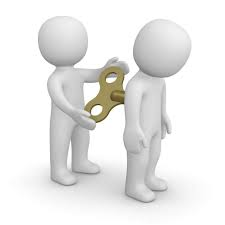

Are You A Red Or Green Flag?
Choose an answer for each question and view your result at the end!
Do you actively listen to other people while they are expressing themselves?
Of course I do! In the meantime, I like to conjure ways to help other people based on the struggles I hear!
Well, I get bored easily, so not all the time. I do believe that I have better things to do than listen to someone ranting about themselves!
How much do you strive to commit to a friend or loved one?
I give it my all! I cherish them and I do my best to ensure that they are okay. I am their loyal companion!
Commitment is quite tiresome. Over time, it gets boring. My appreciation for them diminishes over time!
Do you force your will upon others?
Of course not! Coercion is not the way to handle a relationship. I believe that everyone has a right to their own thinking and decisions!

Sometimes I do, but that is because I believe that my decisions are superior to others. I do what I believe is for their best interest even if they don’t like it.
Your result is...
Restart